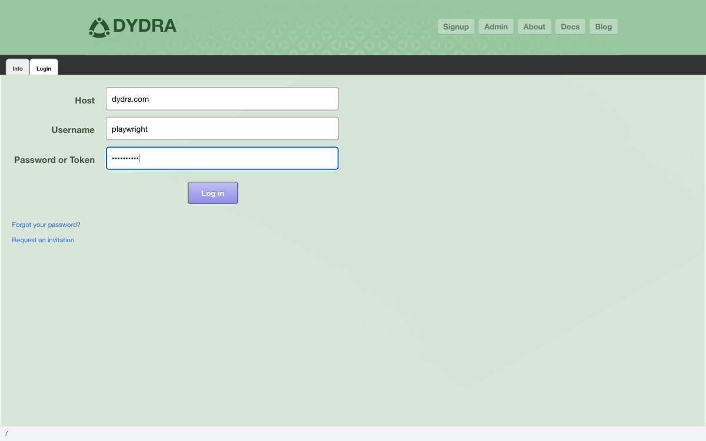

Overview
Dydra Studio asks you to sign in before it shows your account and repositories. This chapter tells you how to sign in and how to hold a session.
Open the Login Page
To reach Dydra Studio, go to:
URL:
https://dydra.com/ui/user
The application shows the login page when you first open it, and whenever you are not signed in.
Sign In to Your Account
To sign in:
Step 1:
Go to the login page at
https://dydra.com/ui/user

Figure 1: Login form with credentials entered, ready to submit
Step 2:
Enter your account credentials:
- Host: The Dydra service host (typically
https://dydra.com) - Login: Your account username
- Password: Your account password
Step 3:
Click the Login button or press Enter
Step 4:
The application takes you to your account page, where you can see your repositories and account information.
Note: You can hold several accounts open at once. Switch between them, or add another, at any point in a session.
Two Ways to Prove Who You Are
Dydra Studio accepts two:
- Basic: give a username and a password
- Bearer token: give a token instead, for programmatic access.
Write it as "Bearer tokenValue".
For ordinary use, choose Basic and give your username and password.
Hold a Session
What the Browser Remembers
The application keeps only account names across a page reload, in browser storage. So:
- It remembers the accounts you have signed in to, and offers them after a reload
- You reach an account you used before without typing its name again
Important: tokens and every other piece of session data live in JavaScript objects for the life of one page. Close the page or the browser tab and all of it goes, tokens included. Sign in again afterwards, even though the account names come back.
Sign Out
To sign out:
- Click the Logout link in the navigation bar
- The application returns you to the login page
- It clears every piece of session data from memory, tokens included
- Browser storage may still hold the account names, for convenience; sign in again to reach the account
When Sign-In Fails
Check These First
If you cannot sign in, check that:
- Your username and password are right
- The host URL is right — usually
https://dydra.com - Your network reaches the service
- Your account exists and is active
Error Messages
If the application reports an error:
- Read it closely — it names the problem
- "Invalid credentials" and "Authentication failed" are the common ones
- If it keeps happening, write to support@dydra.com
Next Steps
Once you are in, you can:
- Read and edit your account metadata
- Create and manage repositories
- Import and export data
- Create and execute SPARQL views
- Read Tips and Best Practices to move faster and diagnose trouble
- Turn to the Appendices for file formats and keyboard shortcuts